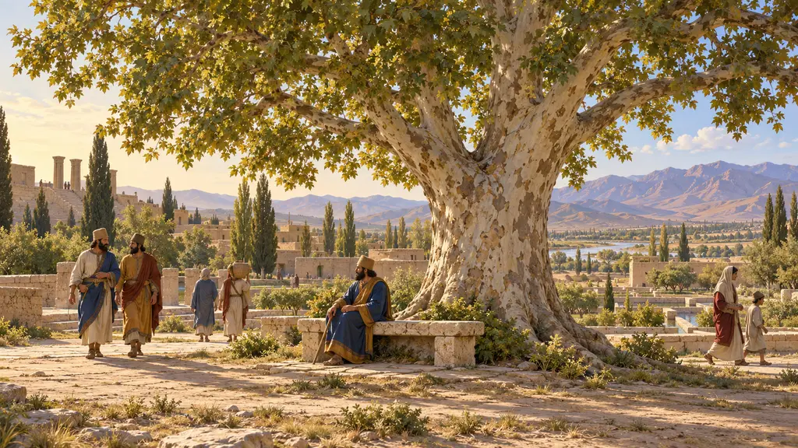
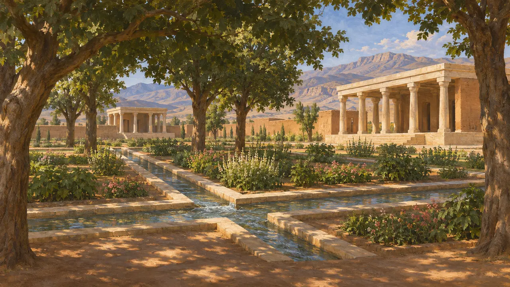
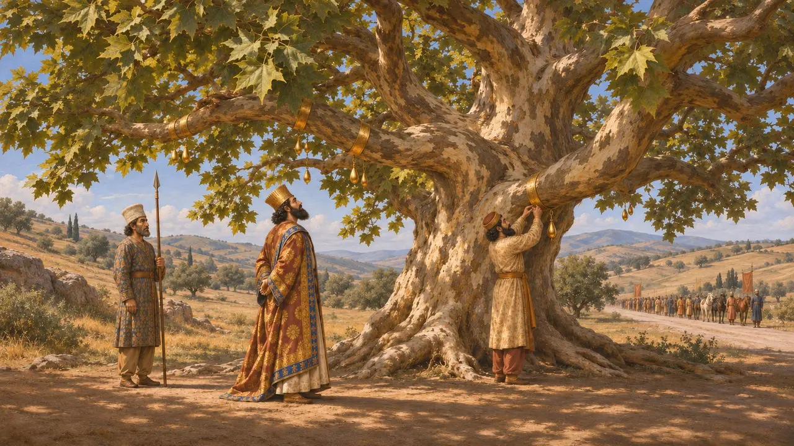
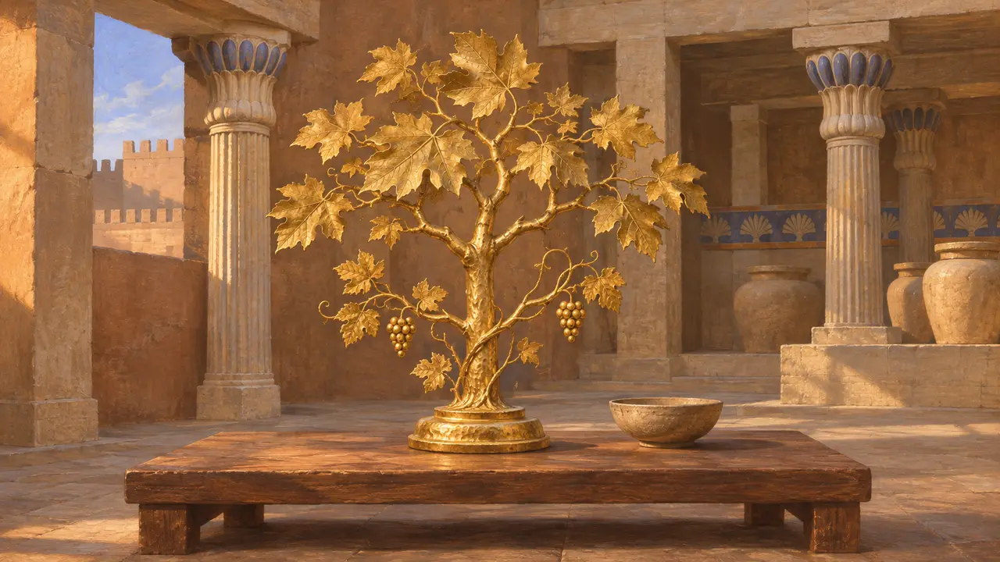
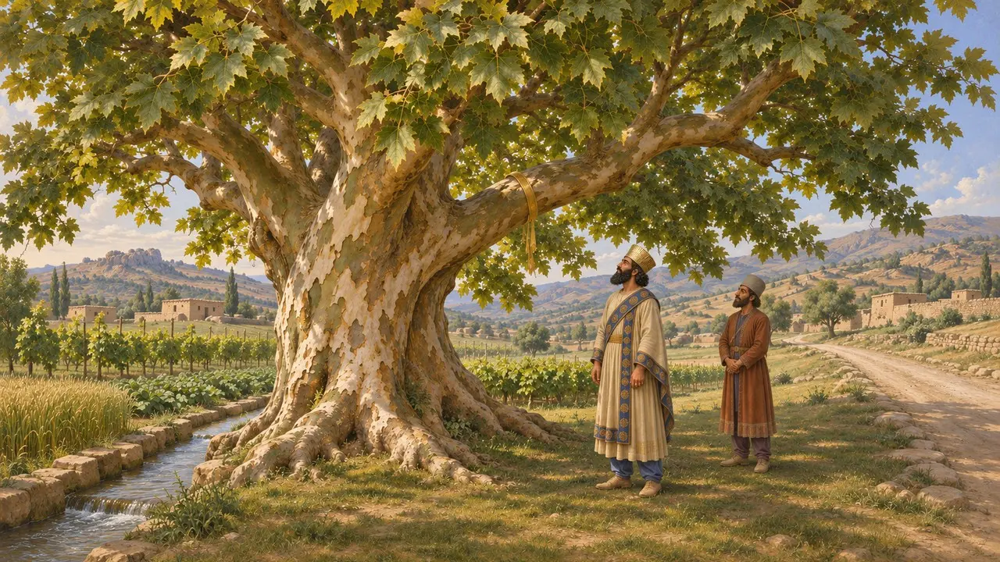
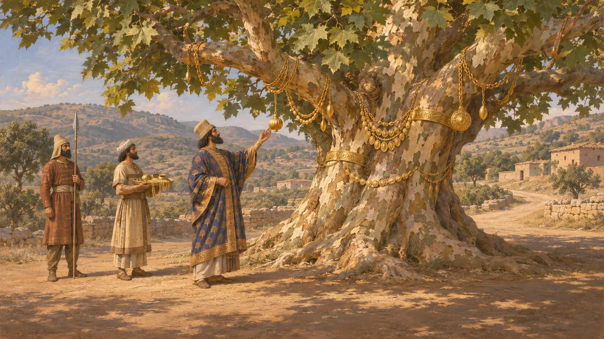

동양 플라타너스(Platanus orientalis)는 동지중해와 서아시아가 원산지인, 가지가 넓게 퍼지고 수명이 긴 나무다. 물가에서 짙은 그늘을 드리운다. 그리스 저술가들은 이 나무를 페르시아 왕들과 연결 지었다. 헤로도토스는 크세르크세스가 리디아에서 플라타너스 한 그루를 기린 이야기를 전하며, 왕들은 금으로 만든 유명한 플라타너스를 소유하고 있었다.
게임에서: 게임에서 플라타너스는 주거 지역의 그늘나무로 등장하며, 헤로도토스 7.31에서 가져온 크세르크세스 일화가 덧붙어 있습니다. 게임은 이 나무를 도시 안에 두지만, 크세르크세스가 경의를 표한 나무는 리디아를 지나는 그의 행군로 가에 서 있었습니다.

페르시아 정원의 그늘과 물
당대 기록파사르가다에 발굴에서는 키루스의 궁전들 주위에 석조 수로와 화단을 갖추어 조성한 왕실 정원이 드러났다. 유적을 보면 나무와 식물을 질서 있는 설계에 따라 심었음을 알 수 있다. 그러나 어떤 수종을 길렀는지는 알 수 없으므로, 물이 넉넉한 그런 땅에 잘 어울리기는 해도 플라타너스가 그곳에 있었다고 단정할 수는 없다.
D. Stronach, Pasargadae, 1978

크세르크세스와 리디아의 플라타너스
고대의 전승헤로도토스에 따르면 481년, 군대가 겨울을 난 사르디스로 프리기아에서 행군하던 크세르크세스는 리디아의 칼라테보스를 조금 지난 곳에서 플라타너스 한 그루와 마주쳤다. 그는 그 나무가 너무도 아름다워 금 장식을 내리고 불사병 한 명을 남겨 지키게 했다. 헤로도토스는 이 이야기를 짧게, 비판 없이 전한다.
Herodotus 7.31

왕들의 황금 플라타너스
고대의 전승헤로도토스에 따르면, 리디아인 피티오스는 일찍이 다리우스에게 황금으로 만든 플라타너스와 포도나무를 바쳤다. 크세노폰은 기원전 367년 왕궁에서 돌아온 아르카디아 사절 안티오코스가, 그 유명한 황금 플라타너스는 메뚜기 한 마리에게 그늘을 드리우기에도 작다고 비웃었다고 전한다. 이것이 같은 물건이었다면(그럴 가능성이 높다), 이 황금 플라타너스는 100년이 훨씬 넘도록 왕실의 이름난 보물로 전해진 셈이다.
Herodotus 7.27; Xenophon, Hellenica 7.1.38

왜 나무를 기렸나
분쟁 중크세르크세스의 이 행동이 무엇을 뜻했는지에 대해 역사가들의 의견은 엇갈린다. 훌륭한 나무를 보고 느낀 개인적인 기쁨으로 읽는 이들도 있다. 브리앙을 비롯한 다른 이들은 이를 왕이 땅을 비옥하게 하고 푸르게 지키는 존재라는 왕실 관념과 연결 짓는데, 이 관념은 왕의 정원과 황금 플라타너스에서도 드러난다. 정작 페르시아 측 사료는 이 나무에 대해 아무것도 말하지 않는다.
P. Briant, From Cyrus to Alexander, 2002

어리석은 왕의 이야기
후대의 전설서기 200년경 로마 시대의 그리스 저술가 아일리아노스는 리디아의 플라타너스 이야기를 교훈담으로 바꾸었다. 그는 크세르크세스가 나무를 사랑한 일을 어리석은 방종으로 그렸는데, 이는 페르시아의 사치와 그리스의 절제를 대비하는 데 쓰이던 전형적인 이야기였다. 그의 판본에는 헤로도토스가 전하지 않는 세부가 덧붙어 있으므로 사실로 받아들여서는 안 된다.
Aelian, Varia Historia
출처
- Herodotus 7.31
- Herodotus 7.27
- Xenophon, Hellenica 7.1.38
- P. Briant, From Cyrus to Alexander, 2002
- D. Stronach, Pasargadae, 1978
- Aelian, Varia Historia